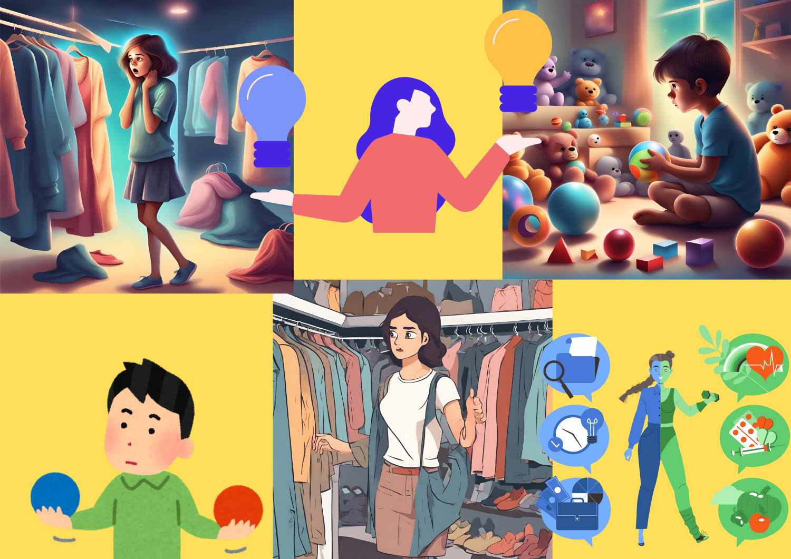

Comparison helps us get results for our decisions
in everyday life and in important matters too.
The words that help us do these comparisons are called
COMPARATIVE ADJECTIVES and SUPERLATIVE ADJECTIVES.